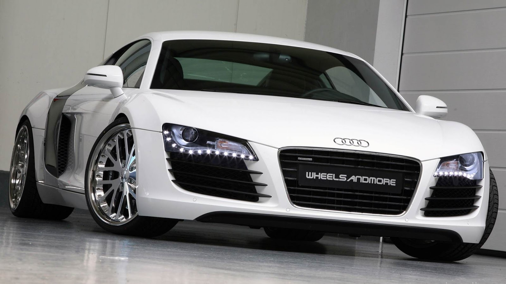
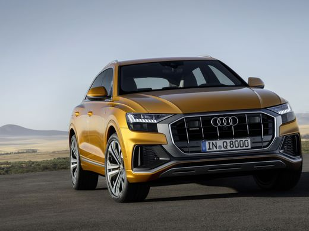

Audi je njemački proizvođač automobila sa sjedištem u Ingolstadtu. Od 1964., Audi je marka unutar Volkswagen grupe. Automobili proizvođača Audi se proizvode u Ingolstadtu, Neckarsulmu, Győru (Mađarska), Bratislavi (Slovačka), Sao José dos Pinhais (Brazil) i u Changchunu (Kina). August Horch (1868. – 1951.), je 1899. osnovao marku Horch i počeo s proizvodnjom automobila, ali je u uskoro izbačen iz svoje kompanije pa je 1909. godine osnovao novu. Međutim, više nije imao pravo na korištenje svog obiteljskog imena pa je svoje prezime Horch preveo na latinski jezik. Riječ audi je imperativ od audire (na hrvatskom čuti), što i znači „Čuj!“ ili na njemačkom „Horch!“.
 Povijest
Prva saznanja o Audiju datiraju još iz davne 1899. kada je 14. studenog August Horch osnovao A. Horch & Cie i 1901. godine počeo s proizvodnjom automobila. Horch je radio u kompaniji do 1909. kada napušta kompaniju i osniva svoju pod imenom Audi. Prvi automobili proizvedeni su 1910. godine pod nazivom Type A, B, C, D, E... Proizvodili su se sve do 1932, kada se Audi udružuje s još 3 velika proizvođača – Horch, DKW i Wanderer. Te četiri kompanije formirale su logo s ukrštena četiri prstena. Od 1933. pod nazivom Auto Union proizvode se sljedeći modeli: UW Front Cabriolet, Front, UW Limousine, 225 Cabriolet, 225 Glaser, 225 Roadster, 920 Limousine. I za to razdoblje na kraju bi se mogao spomenuti i Auto Union 60 proizveden 1968. koji sve više liči na novije linije automobila. Već 1969. godine pod nazivom NSU proizvode se modeli: 100, 100s, 100 Coupe, 80, 200, 80 CD sve do 1984. Od 1985. godine Audi dobiva svoj današnji naziv i prepoznatljiv logo s četiri prstena, mada je i kao Auto Union imao četiri prstena, no sa malo drugačijim dizajnom. U ovom razdoblju treba naglasiti da Audi prvi put 1980. u svoje modele ugrađuje quattro pogon. Pa tako se i od 1985. godine proizvode već prepoznatljivi modeli: 80, 90, Quattro Sport, 100, 200, A4, A6, A3, A8, S2, RS2, A2 pa sve do danas kad se proizvode i Q2, Q3,Q5 ,Q7, TT,RS3, RS4, RS5,RS6,RS7,S8,S7,S6,S5,S4,S3,S1,R8 itd. 2005. godine Audi je slavio 25. rođendan Quattro pogona (25 godina quattro) i 2009. godine stoti rođendan postajanja.